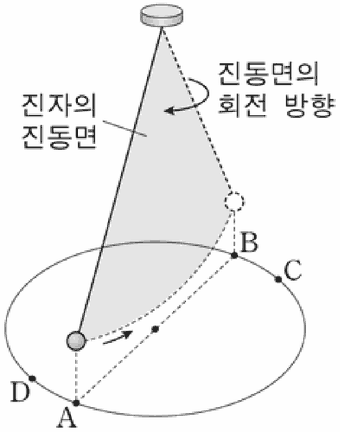

전향력
지문을 먼저 읽고, 이해가 막히는 문단에서 ‘그림으로 보기’를 누르세요. 그림은 문단을 따라 바뀝니다.
1문단우주에서 지구의 북극을 내려다보면 지구는 시계 반대 방향으로 빠르게 자전하고 있지만 우리는 그 사실을 잘 인지하지 못한다. 지구의 자전 때문에 일어나는 현상 중 하나는 지구 상에서 운동하는 물체의 운동 방향이 편향되는 것이다. 이러한 현상의 원인이 되는 가상적인 힘을 전향력이라 한다.
2문단전향력은 지구가 자전하기 때문에 나타난다. 구 모양인 지구의 둘레는 적도가 가장 길고 위도가 높아질수록 짧아진다. 지구의 자전 주기는 위도와 상관없이 동일하므로 자전하는 속력은 적도에서 가장 빠르고, 고위도로 갈수록 속력이 느려져서 남극과 북극에서는 0이 된다.
3문단적도 상의 특정 지점에서 동일한 경도 상에 있는 북위 30도 지점을 목표로 어떤 물체를 발사한다고 하자. 이때 물체에 영향을 주는 마찰력이나 다른 힘은 없다고 가정한다. 적도 상의 발사 지점은 약 1,600km/h의 속력으로 자전하고 있다. 북쪽으로 발사된 물체는 발사 속력 외에 약 1,600km/h로 동쪽으로 진행하는 속력을 동시에 갖게 된다. 한편 북위 30도 지점은 약 1,400km/h의 속력으로 자전하고 있다. 목표 지점은 발사 지점보다 약 200km/h가 더 느리게 동쪽으로 움직이고 있는 것이다. 따라서 발사된 물체는 겨냥했던 목표 지점보다 더 동쪽에 있는 지점에 도달하게 된다. 이때 지구 표면의 발사 지점에서 보면, 발사된 물체의 이동 경로는 처음에 목표로 했던 북쪽 방향의 오른쪽으로 휘어져 나타나게 된다.
4문단이번에는 북위 30도에서 자전 속력이 약 800km/h인 북위 60도의 동일 경도 상에 있는 지점을 목표로 설정하고 같은 실험을 실행한다고 하자. 두 지점의 자전하는 속력의 차이는 약 600km/h이므로 이 물체는 적도에서 북위 30도를 향해 발사했을 때보다 더 오른쪽으로 떨어지게 된다. 이렇게 운동 방향이 좌우로 편향되는 정도는 저위도에서 고위도로 갈수록 더 커진다. 결국 위도에 따른 자전 속력의 차이가 고위도로 갈수록 더 커지기 때문에 좌우로 편향되는 정도는 북극과 남극에서 최대가 되고, 적도에서는 0이 된다. 이러한 편향 현상은 북쪽뿐 아니라 다른 방향으로 운동하는 모든 물체에 마찬가지로 나타난다.
5문단전향력의 크기는 위도뿐만 아니라 물체의 이동하는 속력과도 관련이 있다. 지표를 기준으로 한 이동 속력이 빠를수록 전향력이 커지며, 지표 상에 정지해 있는 물체에는 전향력이 나타나지 않는다. 한편, 전향력은 운동하는 물체의 진행 방향이 북반구에서는 오른쪽으로, 남반구에서는 왼쪽으로 편향되게 한다.
윗글을 바탕으로 <보기>를 이해한 내용으로 적절하지 않은 것은? [3점]

그림: 천장에 고정한 줄 끝의 추가 바닥 원 위 A에서 B 쪽으로 진동하고, 진동면이 화살표 방향(위에서 볼 때 시계 방향)으로 회전함. 원 위에 A, B, C, D 표시" style="float:right;width:38%;max-width:170px;margin:0 0 6px 10px">전향력은 1851년 프랑스의 과학자 푸코가 파리의 팡테옹 사원에서 실시한 진자 실험을 통해서도 확인할 수 있다. 푸코는 길이가 67m인 줄의 한 쪽 끝을 천장에 고정하고 다른 쪽 끝에 28kg의 추를 매달아 진동시켰는데, 시간이 지남에 따라 진자의 진동면이 시계 방향으로 회전한다는 사실을 발견하였다. 이는 추가 A에서 B로 이동할 때, 전향력에 의해 C쪽으로 미세하게 휘어져 이동하고, 되돌아올 때는 D쪽으로 미세하게 휘어져 이동한다는 사실과 관련이 있다.